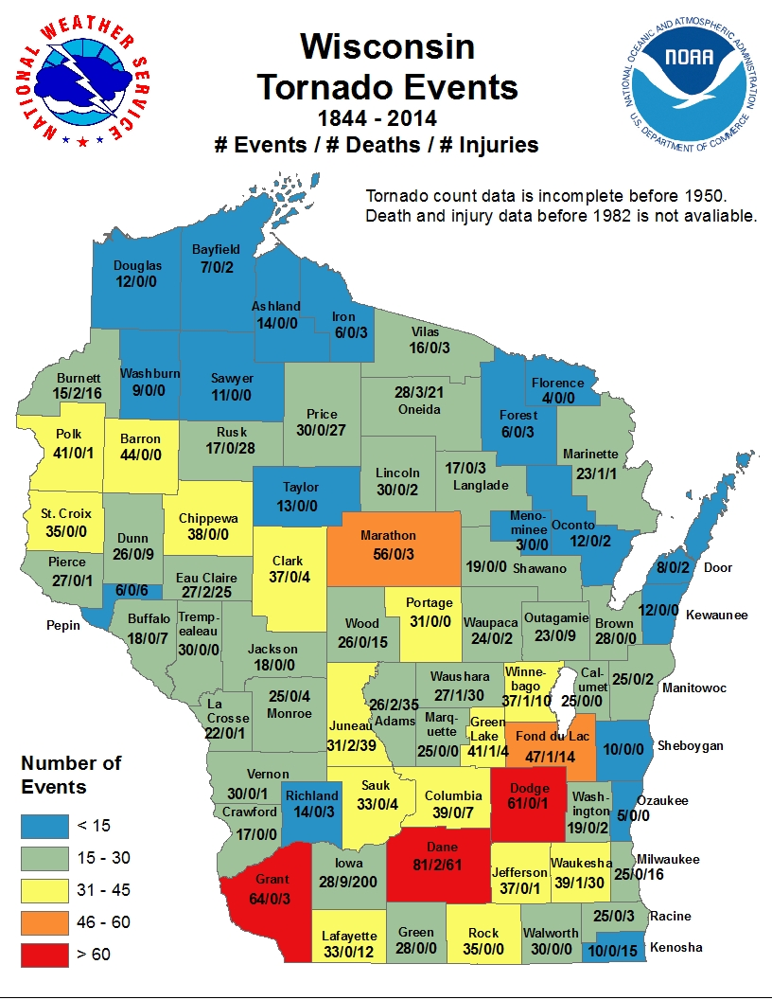

Using R as a GIS
Matthew Haffner
Department of Geography
Oklahoma State University
Overview
- Introduction to R
- Demonstration of R as a GIS
- Spatial Autocorrelation
- Interactive Exercises
The R language
Variable Declaration (<-)
x <- 1
y <- 2
z <- x + y
Variable Declaration (=)
x = 1
y = 2
z = x + y
The R language
Libraries and Data
install.packages('GISTools')
library(GISTools)
library(OpenStreetMap)
library(rgdal)
data(tornados)
data(newhaven)
data(georgia)
data(mtcars)
The R language
Plotting
hist(tornadoes)
hist(wisconsin.tornadoes)
plot(wisconsin)
plot(wisconsin.tonadoes, add = TRUE)
The R language
Comments
#anything following a '#' will not be executed
#find tornadoes inside and within 25km of Wisconsin
wisconsin_buf <- gBuffer(wisconsin, wisconsindth = 25000)
wisconsin_buf_torn <- gIntersection(wisconsin_buf, torn2) # comment
plot(wisconsin_buf) # comment
plot(wisconsin_plus_buf_torn, add = TRUE)
plot(wisconsin, add = TRUE)
The R language
Functions
Simple example
fn <- function(arg1, arg2) {
arg1 * arg2
}
> fn(6, 7)
[1] 42
>
Practical example
library(GISTools)
merged <- gUnion(wisconsin_counties, minnesota_counties)
How R Can Be Used As a GIS
Why R?
- Efficiency - avoid manual labor!
- Reproducibility
- Freedom/openness
Plot 20-30 points in a random spatial pattern
Spatial Autocorrelation
Points
Polygons
Spatial Autocorrelation

Source: http://rfunctions.blogspot.com/2017/06/how-to-identify-and-remove-spatial.html
Temporal Autocorrelation
Spatial Autocorrelation

Source: http://pro.arcgis.com/en/pro-app/tool-reference/spatial-statistics/GUID-5CCEE7E5-839C-46E8-A88B-FCD02F07B209-web.gif
Visually Identifying Spatial Autocorrelation
- Visit http://geo-haffner.com in a web browser
- Example login:
- Username:
- Password: wec-gis
- Open the file "wec-gis/scripts/random-maps.R"
- Use the "Run" button to execute each line individually
- Once you get to the bottom of the file, maps should generate automatically
- Type "real.data" in the console to see which map holds the actual data
- Put the cursor on line 40 to run the code again
- On line 40, replace "Flood" and "Purples" with other options
Spatial Autocorrelation
-1 < Moran's Index of Spatial Autocorrelation < 1
Who is my neighbor?
Iterative Approach to Moran's I
Extensions To This Analysis
- Are the spatial patterns of earthquakes in Oklahoma clustered, dispersed or random?
- Is there are relationship between deaths in tornaoes/floods to income and race?
Limitations Of This Approach
- Edge effects
- Disproportionately sized counties
- Data disconnect - polygon area vs. land area
- The map is not projected
What is a GIS?
"A geographic information system (GIS) lets us visualize, question, analyze, and interpret data to understand relationships, patterns, and trends." -ESRI
What is GIScience?
" Geographic information science applies the concepts of information systems science, geography, geodesy, cognitive science, mathematics, physics, computer science, psychology, ethics, and related sciences to design tools and techniques for analyzing, displaying, visualizing, and communicating information about places, events, activities, and phenomena on or near the surface of the Earth." -Oregon State University